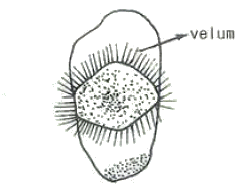
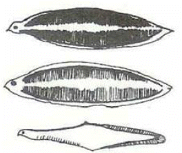

수산양식기능사 (2007-04-01 기출문제)
1과목: 수산양식
1. 피조개 양성장으로 가장 알맞은 곳은?
- 바닥이 개흙질이고 해수의 흐름이 좋은 곳
- 수심이 얕아 간출이 길며 먹이 생물이 많은 곳
- 수심이 깊고 갈조류가 번성한 곳
- 육수의 영향을 받지 않는 곳
(정답률: 70%)

2. 김사상체 배양관리기간 중 수온의 변화에 따른 조도 조절이 맞는 것은?
- 수온 상승에 따라 어둡게 한다.
- 수온 상승에 따라 밝게 한다.
- 수온과는 관계없이 성장과정에 따라 조절한다.
- 수온과 관계없이 일장조도를 유지한다.
(정답률: 84%)
3. 김 성육의 최적 수온은?
- 1~3℃
- 3~4℃
- 5~8℃
- 8~12℃
(정답률: 64%)
4. 다음 미역에 대한 설명 중 틀린 것은?
- 세대교변을 한다.
- 우리나라 전 연안에 분포한다.
- 1년생 해조류이다.
- 포자체 세대와 배우체 세대가 모양이 같은 동형 세대를 가진다.
(정답률: 55%)
5. 방어의 양식 적지조건의로 적합하지 못한 것은?
- 해수의 순환이 좋은 곳
- 사료의 공급과 출하가 용이한 곳
- 강우시 다량의 담수가 유입되는 곳
- 수온이 18~29℃로 오래 유지되는 곳
(정답률: 77%)
6. 실뱅장어의 포획방법 중 잘못된 것은?
- 만조와 사리때 포획한다.
- 담수를 유입시키면 대량 포획이 가능하다.
- 주로 낮에 포획한다.
- 밤에 등불 등 관선으로 모이게 하여 포획한다.
(정답률: 86%)
7. 다음 중 순환여과식 사육장치의 시설이 아닌 것은?
- 사육조
- 침전조
- 사료조
- 여과조
(정답률: 75%)
8. 사료 제조시설로만 짝지워진 것은?
- 분쇄기, 초퍼, 펠렛 제조기
- 초퍼, 냉장고, 창고
- 분쇄기, 사료찌는 솥, 축양사
- 분쇄기, 냉장고, 부화실
(정답률: 84%)
9. 잉어와 붕어의 종묘가 같은 크기에서 외향으로서 가장 쉽게 구별할 수 있는 특징은?
- 붕어는 잉어보다 꼬리지느러미가 유난히 길다.
- 잉어는 주둥이 주위에 수염이 있다.
- 붕어는 잉어보다 등(체고)이 높다.
- 잉어는 붕어보다 몸통이 길다.
(정답률: 92%)
10. 새꼬막의 부유 유생이 부착기에 가까워지면 어떤 변화가 나타나는가?
- 면반이 발달하고 섬모운동이 활발해진다.
- 발이 발달하고 면반은 퇴화한다.
- 발과 면반이 모두 발달하여 유영력이 활발해진다.
- 발과 면반이 모두 퇴화한다.
(정답률: 70%)
11. 아래 그림은 전복의 발생단계 중 한 기(stage)에 해당하는 것이다. 무엇을 그린 것인가?

- 담륜자기
- 상실기
- 피면자기
- 원각기
(정답률: 67%)
12. 금붕어 중 가장 흔한 종류로 몸이 길고 몸 색깔은 적색 또는 적ㆍ백이 섞인 것이 있고, 꼬리는 짧으며, 세꼬리, 네꼬리, 벚꼬리 등을 가진 것은?
- 화금
- 유금
- 난금
- 출목
(정답률: 93%)
13. 냉장김발의 냉장시기는 해수 수온이 몇 ℃일 때가 가장 좋은가?
- 1~6℃
- 7~10℃
- 13~18℃
- 19~23℃
(정답률: 54%)
14. 부유 유생 기간을 끝낸 후 일생동안 부착생활을 하는 종류는?
- 개량조개
- 우렁쉥이
- 키조개
- 가무락
(정답률: 85%)
15. 천연산 채묘 중 비부착성 채묘로 적당한 방법은?
- 부동식
- 고정식
- 완류식
- 조위망식
(정답률: 80%)
16. 다음 중 미역의 포자엽으로 좋지 못한 것은?
- 광택이 있는 것
- 크고 두꺼운 것
- 질기고 점액이 적은 것
- 다갈색 또는 흑갈색으로 가장자리의 색이 짙은 것
(정답률: 73%)
17. 우리나라에 서식하고 있는 전복 중 한류계 전복은?
- 말전복
- 시볼트전복
- 둥근전복
- 참전복
(정답률: 77%)
18. 담수 어류의 산란 촉진제로 가장 잘 쓰이는 것은?
- 링거액
- 비타민 C
- 뇌하수체
- 알코올
(정답률: 80%)
19. 다음 그림은 무엇의 유생인가?

- 연어
- 잉어
- 뱀장어
- 방어
(정답률: 80%)
20. 다음 중 산란시 수컷이 암컷의 몸을 감고 압력을 주면서 산란행동을 하는 종류는?
- 붕어
- 잉어
- 미꾸라지
- 감성돔
(정답률: 84%)
2과목: 수산생물
21. 다음 해양 생물 중 가장 먼저 생겨난 것은?
- 남조류
- 석회조류
- 갈조류
- 녹조류
(정답률: 58%)
22. 다음 중 해수에 가장 많이 함유된 성분은?
- NaCl
- MgCl2
- CaCl2
- Na2SO4
(정답률: 67%)
23. 하램(harem)을 형성하는 수생 포유류는?
- 물개
- 수달
- 해달
- 고래
(정답률: 75%)
24. 다음 중 공기호흡을 할 수 있는 것은?
- 농어
- 가물치
- 가시고기
- 뱀장어
(정답률: 65%)
25. 생물 분류의 단계를 바르게 나타낸 것은?
- 과 - 목 - 문 - 강 - 속 - 종
- 과 - 목 - 문 - 강 - 종 - 속
- 문 - 강 - 목 - 과 - 종 - 속
- 문 - 강 - 목 - 과 - 속 - 종
(정답률: 67%)
26. 참조기 성어가 우리나라 서해안의 남서방 해역에서 연평도 근해로 회유하는 것은?
- 유기회유
- 성육회유
- 산란회유
- 색이회유
(정답률: 79%)
27. 경골어류의 표준체장은?
- 주둥이 앞 끝에서 항문까지
- 주둥이 앞 끝에서 꼬리지느러미 기저까지
- 주둥이 앞 끝에서 꼬리지느러미 뒤끝까지
- 아감딱지에서 항문까지
(정답률: 77%)
28. 다음 중 가장 원시적인 종류로 알려진 갑각류는?
- 보리새우
- 젓새우
- 곤쟁이
- 풍년새우
(정답률: 64%)
29. 새우류의 유생단계가 바르게 연결된 것은?
- 노플리우스 → 조에아 → 미시스
- 노플리우스 → 조에아 → 메갈로파
- 노플리우스 → 메갈로파 → 미시스
- 노플리우스 → 미시스 → 조에아
(정답률: 73%)
30. 해삼의 유생을 무엇이라고 하는가?
- 글라우코토에
- 아우리쿨라리아
- 비핀나리아
- 에키노프루테우스
(정답률: 72%)
31. 다음 중 알긴산을 가장 많이 가지고 있는 것은?
- 남조식물
- 갈조식물
- 녹조식물
- 와편모조식물
(정답률: 75%)
32. 다음 중 홍조식물만으로 짝지어진 것은?
- 미역, 다시마
- 김, 우뭇가사리
- 파래, 청각
- 감태, 곰피
(정답률: 82%)
33. 녹조식물(chlorophyta)의 특징이 아닌 것은?
- 생식세포의 편모는 2개뿐이다.
- 동화 저장물은 녹말이다.
- 해산종도 단세포로서 부유생활을 하는 것이 있으나 대부분이 다세포이다.
- 대부분 엽록체 내에 단백질의 소체인 피레노이드를 가진다.
(정답률: 70%)
34. 미역, 감태 등의 해조류를 먹고 사는 것은?
- 담치
- 소라
- 가리비
- 굴
(정답률: 65%)
35. 담수어에 주로 기생하는 닻벌레의 분류학상 위치는?
- 십각류
- 만각류
- 다모류
- 요각류
(정답률: 62%)
36. 비브리오병이 가장 많이 발병되는 시기를 바르게 나타낸 것은?
- 7~8월로서 수온이 20~30℃ 일 때
- 5~6월로서 수온이 10~15℃ 일 때
- 9~10월로서 수온이 10℃ 이하 일 때
- 3~4월로서 수온이 5℃ 내외 일 때
(정답률: 70%)
37. 트리코디나충병을 정확하게 진단하려면 어떤 방법이 가장 좋은가?
- 몸의 색깔을 보아 검은색으로 변화하는가의 여부
- 비늘이 탈락되고, 몸표면이 충혈되는가의 여부
- 운동이 활발하지 않은가의 여부
- 체표, 아가미 일부를 떼어 100배 정도의 현미경 관찰, 기생충 검색확인
(정답률: 79%)
38. 대합의 흡충류인 바시저(Bacciger)속 기생충의 스포로시스트 기생부위는?
- 소화기관과 아가미
- 중장선과 창자
- 생식소와 아가미
- 소화기관과 새입정맥
(정답률: 70%)
39. 다른 섬모충과 달리 표피조직 내에 충이 침입해 있기 때문에 완전히 구제하기 힘든 병은?
- 백점병
- 트리코디나병
- 비브리오병
- 솔방울병
(정답률: 74%)
40. 질소나 산소가 과다하게 용존된 양어장에서 생기기 쉬운 병은?
- 가스병
- 백점병
- 새신병
- 비타민 결핍증
(정답률: 77%)
3과목: 양식장 수질관리 및 양식생물 질병
41. 바이러스병이 가장 심하게 피해를 주는 어류는?
- 연어, 송어
- 잉어, 붕어
- 미꾸라지, 뱀장어
- 초어, 백연어
(정답률: 65%)
42. 잉어 등의 어류에서 생기는 등여윔병의 주 발생 원인은?
- 산화지방의 독성
- 탄수화물의 과잉투여
- 단백질 성분의 결핍증
- 지방의 결핍현상
(정답률: 82%)
43. 연어과 어류에서 IHN과 IPN질병의 말기증상의 외관상 공통점은?
- 나선 선회 운동
- 복부팽만
- 삼투압 조절의 저해
- 평행감각 기능 상실
(정답률: 70%)
44. 노출부족, 광선부족 등에 의한 생리적 장애로 생기는 김의 병은?
- 흰 갯병
- 구멍 갯병
- 녹반병
- 호상균병
(정답률: 73%)
45. 어떤 물질의 질량과 이것과 같은 부피를 가진 표준물질의 질량과 비를 무엇이라고 하는가?
- 비용
- 비중
- 질량
- 밀도
(정답률: 70%)
46. 담수 양어장에서 하루 중 용존산소가 가장 낮은 때는?
- 일출직전
- 정오경
- 일몰직전
- 자정경
(정답률: 80%)
47. 양어지의 고기가 입오림을 할 때 취하는 올바른 방법은?
- 먹이 부족이므로 먹이를 준다.
- 해적 침입으로 인한 도핑 중이므로 해적을 구제하여 준다.
- 기생충이 어체에 번식하여 자극을 주기 때문에 못을 소독하여 준다.
- 호흡관란 때문이므로 산소공급장치를 설치하고 산소를 공급한다.
(정답률: 87%)
48. 수온과 어류의 호흡으로 인한 산소 소비와의 관계를 바르게 설명한 것은?
- 어류는 수온이 높을 수록 소량의 산소를 소비한다.
- 어류는 수온이 높을 수록 다량의 산소를 소비한다.
- 어류는 수온이 낮을 수록 다량의 산소를 소비한다.
- 어류의 산소 소비량과 수온변화는 관계가 없다.
(정답률: 82%)
49. 일반적으로 봉산온도계의 눈금은 얼마까지 읽는가?
- 0.1℃ 까지
- 1℃ 까지
- 0.01℃ 까지
- 10℃ 까지
(정답률: 77%)
50. 해수의 비중과 가장 관계가 깊은 것은?
- 염분량
- 해류속도
- 조석
- 수소이온농도
(정답률: 80%)
51. 다음 중 pH의 변화가 가장 적은 것은?
- 호소의 물
- 기수
- 하천수
- 외해수
(정답률: 88%)
52. 포렐 수색계(Forel scale)는 몇 단계의 색으로 되어 있는가?
- 7단계
- 9단계
- 11단계
- 13단계
(정답률: 67%)
53. 다음 중 음파를 이용한 유속계에 속하는 것은?
- 안데라 유속계
- ADCP
- 에크만 유속계
- 지오다인 유속계
(정답률: 73%)
54. 현탁물이 많은 시료의 전 증발 잔유물을 측정하기 위하여 시료수를 취할 때 가장 좋은 것은?
- 메스실린더
- 피펫
- 메스플라스크
- 비중계
(정답률: 54%)
55. pH를 계산하는 옳은 식은?
- pH = log 1/[H+]
- pH = log [OH+]/[H+]
- pH = log 1/[OH+]
- pH = log [H+]
(정답률: 84%)
56. 채수한 후 용존산소의 고정은 어떻게 하는 것이 가장 좋은가?
- 실험실로 운반하여 즉시 냉암소에서 한다.
- 실험실로 운반하여 24시간 정치한 후 한다.
- 채수현장에서 즉시 한다.
- 잘 흔들어 햇볕이 있는 곳에 1시간 방치한 후 한다.
(정답률: 73%)
57. 적조가 일어나는 원인이 아닌 것은?
- 낮은 수온이 계속되고 해수의 유동이 없음
- 강우로 인한 많은 육수의 주입으로 해수 중 영양염이 급격히 증가
- 수온이 급격히 상승하여 적조생물의 신진대사를 촉진
- 무풍상태가 계속됨으로 저층수가 표면으로 올라오지 않는 연안에서 김노디니움 등의 플랑크톤이 폭발적으로 번식
(정답률: 67%)
58. 군집밀도에 차이가 나타나는 한계농도를 무엇이라 하는가?
- 치사량
- 불호량
- 혐기량
- 영향량
(정답률: 50%)
59. 다음 중 해수 오염을 일으키는 것이 아닌 것은?
- 방류
- 해상투기물
- 공장폐수
- 인공어초
(정답률: 73%)
60. 바닥갈이 대상지구로 가장 적합한 곳은?
- 진흙 또는 환원성 저질
- 단단하게 굳은 저질
- 바위나 자갈로 이루어진 저질
- 간석지 또는 모래가 많은 저질
(정답률: 67%)